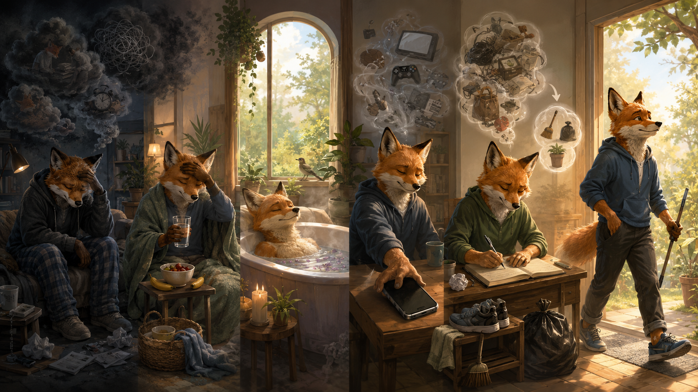

まず「怠け」と決めつけない
「何もやる気がしない」と感じたとき、最初にすべきことは、自分を責めることではありません。
無気力には、
- 睡眠不足
- 疲労
- 暑さや脱水
- 食べ過ぎや空腹
- 病気
- 感情的な消耗
- 情報や刺激の受けすぎ
- 失望や不安
- やることの多さ
など、さまざまな原因があります。
自分は怠けているのではなく、何かによって気力を失っているのかもしれない。
自分を責めると、すでに少なくなっている気力をさらに消耗します。原因を見つけて対処することが、回復への第一歩です。
心と体を静かに立て直す
「何もやる気がしない」ときに、自分を責めるのではなく、 体の状態・休息・刺激・頭の中の重荷を一つずつ整理し、 小さな一歩へつなげるための実践的な流れです。

「何もやる気がしない」と感じたとき、最初にすべきことは、自分を責めることではありません。
無気力には、
など、さまざまな原因があります。
自分は怠けているのではなく、何かによって気力を失っているのかもしれない。
自分を責めると、すでに少なくなっている気力をさらに消耗します。原因を見つけて対処することが、回復への第一歩です。
次に、精神論より先に体の状態を確認します。
体の状態が悪ければ、気力も低下します。
必要に応じて水分を取る、軽く食べる、涼しい場所へ移る、横になる、睡眠を取るなど、まず体が必要としているものを補いましょう。
次に、自分が「疲れている」のか、「停滞している」のかを見分けます。
休息しましょう。以下のような休息を取ることができます。
過度に疲れているときは、無理に動くよりも、まず心身の消耗を止める必要があります。
休息と停滞は似ていますが、休息の後には少し気力が戻ります。一方、停滞している場合は、長く横になっていても、さらに体が重くなりやすいものです。
次のステップ「気力を奪っているものを止める」を始めましょう。
気を散らすものを止めましょう。
気力を回復させようとしても、同時に気力を浪費していれば、なかなか戻りません。
これらは体を動かしていないため、休んでいるように見えます。しかし、脳は情報を処理し、感情を動かし続けています。
ただし、気力を奪うものを止めるだけでは十分ではありません。頭の中に残っている心配や課題も整理する必要があります。
やるべきことを、まず紙に書き出してみましょう。
書き出した後は、必要なものを取捨選択します。優先して行うべきことだけを残し、残りは後日に回しましょう。
今日の目標を、すぐに実行できる大きさまで小さくすることがポイントです。
体を休め、刺激を減らし、課題を小さくしても、なお強い無気力が続くことがあります。
そのような場合は、単に行動方法を工夫するだけでなく、心を支えるものが必要です。
気力は、体力だけでなく、行動の意味によっても支えられます。
大きな理想である必要はありません。
「今日は薬を飲む」「一食だけ用意する」「一人に連絡する」といった小さな行動にも、十分な意味があります。
無気力が重くなると、人と関わることさえ負担に感じられます。しかし、一人で考え続けるほど、問題が大きく見える場合があります。
必要なのは、叱責や精神論ではなく、安心して弱さを見せられる関わりです。
信仰を持つ人にとっては、祈り、聖書を読むこと、神の約束について考えることも、内面的な気力を支えます。
これは、体の疲れが突然消えるという意味ではありません。
イエスは、疲れている人を責めるのではなく、近くに来るよう招きました。弱っているときほど、祈りや聖書を通して、イエスの教えに心を向けることができます。
「善いことを行う点で諦めないようにしましょう。諦めないなら、やがて刈り取ることになります」
― ガラテア 6:9
気力は精神だけの問題ではありません。
睡眠、栄養、水分、血糖、体温、運動量、病気など、体の状態によって大きく左右されます。
睡眠不足があれば、気力、集中力、判断力は低下します。
成人については、一般に一日7時間以上の睡眠が推奨されていますが、必要な睡眠時間には個人差があります。
暑い日、運動後、発熱時などは、水分不足によって、だるさ、頭痛、めまい、集中力低下が起こることがあります。
まず、水や適切な飲み物を少しずつ取りましょう。
空腹のままでは、活動に必要なエネルギーが不足しやすくなります。一方で、一度に大量に食べると、満腹感や消化の負担によって眠くなることがあります。
甘い物だけで無理に元気を出そうとすると、一時的な満足感は得られても、長時間の回復につながるとは限りません。
目的は体を鍛えることではなく、停止状態から活動状態へ切り替えることです。
コーヒーやお茶に含まれるカフェインは、眠気を一時的に弱め、頭をはっきりさせることがあります。
ただし、カフェインは疲労そのものを回復させるわけではありません。活動開始を少し助ける補助として使いましょう。
眠気が強い場合は、短い昼寝が覚醒度を戻す助けになることがあります。
長く眠りすぎると、起きた後にぼんやりしたり、夜の睡眠を妨げたりするため、短時間で区切る方法が一般的です。
休息とは、単に作業をしないことではありません。
SNS、動画、ニュースを見続けていれば、体は止まっていても頭は働き続けています。
最も基本的な休息です。睡眠不足があるなら、まず眠りましょう。
重要なのは、何も考えないことを強制するのではなく、次々と新しい刺激を追いかけないことです。
入浴は、体の緊張を緩め、活動から休息へ切り替える区切りになります。
予定も成果も求めず、ただ休みます。休むことそのものが、次に動くための仕事です。
理想は、完全に崩れる一日ではなく、負荷を最低限に抑えながら心身を整える一日です。
一緒に食事をする。短く話す。静かに同じ場所で過ごす。安心できる人との時間は、緊張を緩めます。
楽しかったかどうかだけでなく、回復したかどうかを見ましょう。
何もやる気がしないとき、最初から元気いっぱいに動く必要はありません。
まず、自分を責めるのをやめましょう。体の状態を確認しましょう。必要なら、しっかり休みましょう。気力を奪っているものを止めましょう。頭の中の重荷を書き出し、今日することを一つだけ決めましょう。
そして、決めた後は考えすぎずに動きます。
立つだけでも構いません。着替えるだけでも構いません。ゴミを一つ捨てるだけでも構いません。
あなたが今できる一歩には、十分な価値があります。